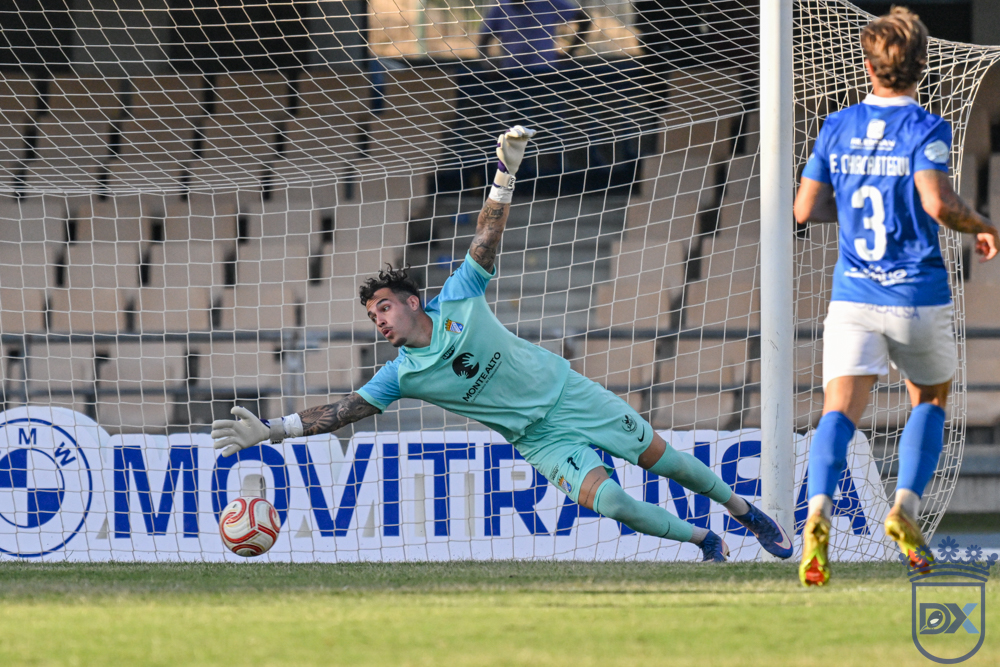
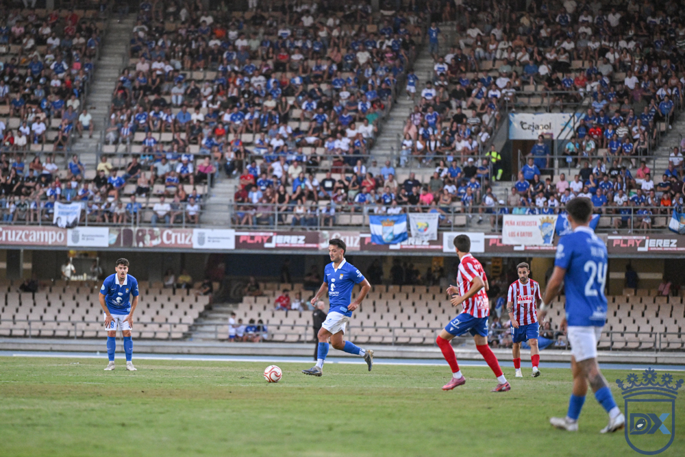
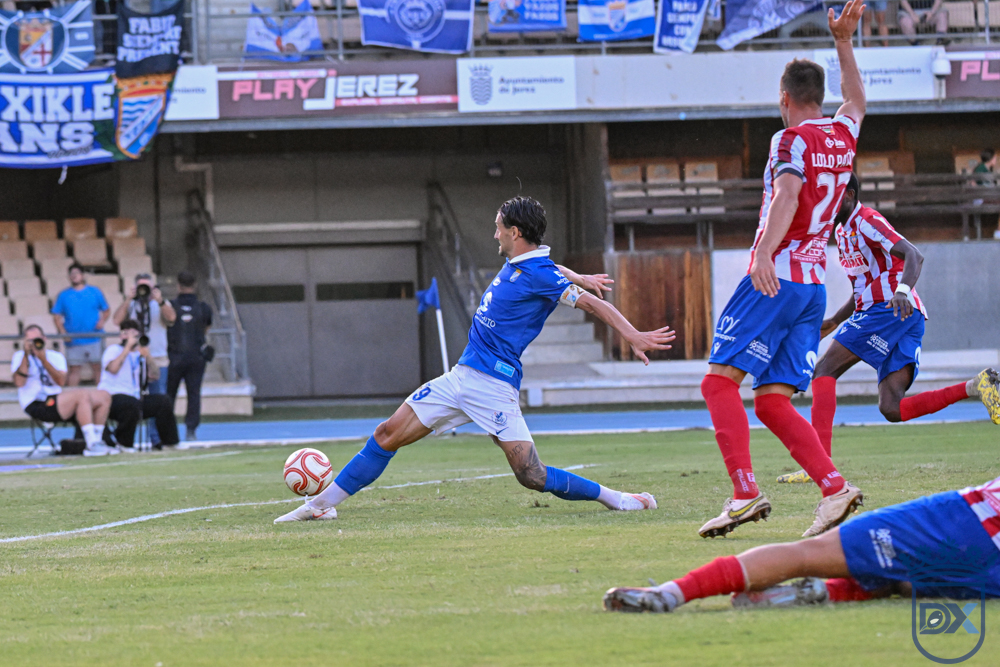
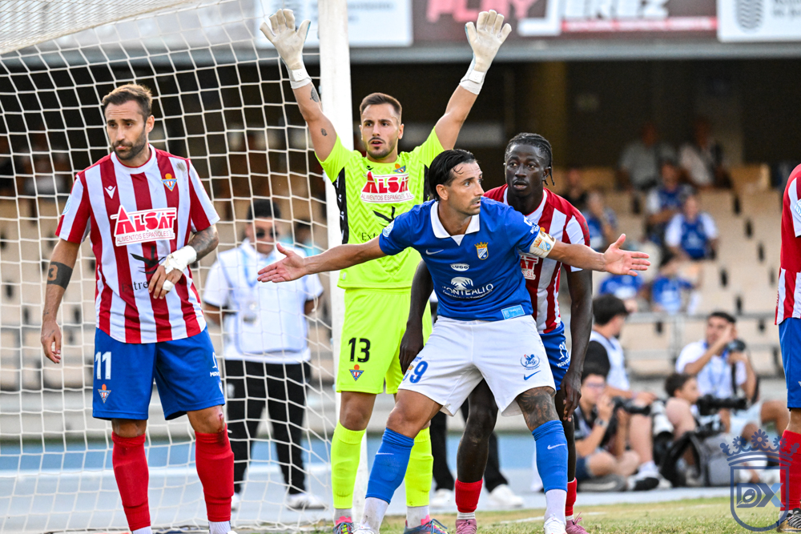
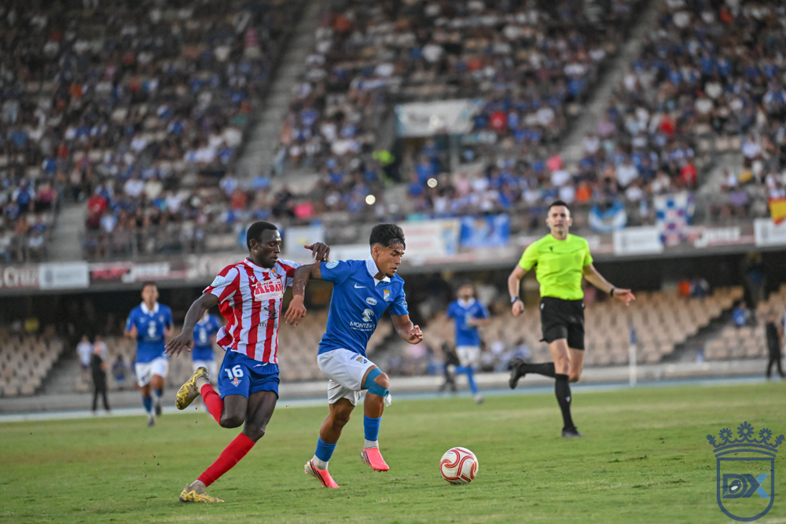

A Xerez side with no ideas and no goals drops points again at Chapín
Xerez CD 0 — 0 Don Benito

Photo: Diario XerecistaXavi Molist's team goes goalless once more against an organised, battling Don Benito, in a match in which the high press worked on in pre-season again proved sterile, with Rubén Mesa disconnected and fresh jeers from the crowd at the final whistle
This Xerez CD still cannot find their best version. Nor could they overcome Don Benito, a side who dropped back intelligently and took a point away from Chapín against a blue-and-white team that was blurred, extremely slow, devoid of resources and lacking any finishing. The Jerez side still have not tasted victory after the first three fixtures of the campaign and have barely managed to scrape a single point from their two consecutive outings in front of their own fans. The hosts put in a woeful first half and, although they grew somewhat after the break, above all thanks to the changes introduced from the bench, they fell short. The squad, right now, lacks the necessary confidence and needs to turn around, as soon as possible, a run that not even the most pessimistic supporters had imagined. The next appointment, this coming Sunday, will be at the Nuevo Colombino.
A record unworthy of a contender
Two points out of a possible nine and a single goal scored in three matchdays make up an extremely poor return for a side that aspired to install itself in the upper reaches of the table from the start of the league season. The figures do not lie and starkly reflect the lack of goals and of cutting edge that grips Xavi Molist's team at this start of the season, still a long way from the objectives the club set for this campaign.
A reshuffled line-up
Xavi Molist once again made changes to his starting eleven. Jaime López was left out of the squad due to a knock picked up in Saturday's session; Manu Galán regained his place at the heart of the defence, leaving Josete on the bench, while Zequi was chosen ahead of Zelu. Óscar Lorenzo started again and Mario Peregrina made his first start in the attacking midfield role. The rest of the line-up matched the one that lost to Badajoz: Pantoja between the posts; Guille, Moi and Chacartegui at the back; Raúl López and Isuskiza in midfield; and Rubén Mesa as the sole reference up front.

Photo: Diario XerecistaHigh press, no result
The blue-and-whites came out faithful to the script worked on over the summer, replicating the high press that had been the hallmark of pre-season, although once again that approach did not translate into any advantage over their opponents. The match began with Zequi drifting inside to leave the left flank to Chacartegui, thus seeking to exploit his runs. The opening exchanges brought a couple of costly losses of possession from Isuskiza in dangerous areas and a first approach down the right through a cross from Óscar Lorenzo that César Llera cleared without difficulty.
Little football on the pitch
Molist was aiming to recover the version shown in the second half against Badajoz, but intentions are not always fulfilled and the home side put in a very poor first period. Even so, the pattern seemed clear: blue-and-white possession against a Don Benito well set at the back who were looking to strike on the counter. The hosts moved the ball around calmly against opponents who dug in with a back five and four players in front. The first attempt on goal came from Zequi, after a patiently worked move until they found the gap.

Photo: Diario XerecistaIn barely three passes, Don Benito arrived in Carlos Pantoja's area after a rapid transition that Antonio Pavón finished off with a shot that flew just past the right-hand post. It was the first warning from the Extremadura side, with much clearer ideas, while the Jerez players found it tremendously hard to trouble the opposition goal, and were also hurried in every action. Zequi tried again with a long-range shot that the visiting defence blocked, sending the ball out for a corner.
The clearest chance to put the hosts ahead came ten minutes before the break: a low cross from Chacartegui that Rubén Mesa failed to reach by a narrow margin. It proved a mirage, however, since the blue-and-white striker remained completely isolated in attack and, despite winning his individual duels against the centre-backs, found himself without support or company. Close to the break, Isuskiza appeared as a saviour to take the ball off Gorka Santamaría when the striker, a former Cádiz player, turned inside the area ready to beat Pantoja. It was the last incident of an awful first half, short on football and without any notable chances of danger.

Photo: Diario XerecistaPantoja's dive
The Jerez side needed an injection of football and Molist reacted as soon as they returned from the dressing room, bringing on Isma in place of a blurred Isuskiza. It was the second match in a row in which the coach was forced to correct his initial plan at half-time, a clear sign that things were not working. Nothing changed after the restart, and it was Don Benito who came close to opening the scoring, with a left-footed strike from Antonio Pavón that forced Carlos Pantoja to stretch.
The stands were beginning to show impatience with some players, among them Óscar Lorenzo, who was trying without luck. A poor touch that ran away from him out of play exhausted the crowd's patience, and Molist was quick to refresh the attack with Jaime Fernández and Julio Martínez, who replaced Óscar and Mario Peregrina.
A generous Antonio Pavón
The home side improved notably with the substitutions; the ball circulation gained speed with Isma running midfield. Guille Campos tried to catch them out with a shot that Llera saved, and shortly afterwards Rubén Mesa managed to control the ball inside the area, though without any follow-up. Julito also tried his luck with an individual effort, although his shot went straight at the keeper and posed no danger at all. It was Antonio Pavón, however, who spurned 0-1 on a crystal-clear counter-attack after a corner in the hosts' favour: the striker found himself completely alone in front of Carlos Pantoja, who produced a saving hand to repel the visitors' shot. Isma also had another opportunity with an effort from the edge of the box that forced César Llera to turn the ball behind for a corner.

Photo: Diario XerecistaMolist then brought on Chuma for Moi, switching to a back three, a risky move aimed at chasing the win. Manu Galán, from a considerable distance, hit the crossbar with his shot. The game was entering its decisive phase with everything still to play for, while the Don Benito coach slowed the game down with his substitutions. The hosts poured forward, leaving wide spaces behind them, and the last chance fell to the visitors from a free kick which, fortunately, did not end in a worse outcome for Jerez interests.
Fali, now two matches warming up
Beyond what happened on the pitch, it is a real luxury for Xerez CD to have Fali as an option from the bench, a player who has now spent two consecutive matches warming up throughout the second half without getting any minutes, a sign of the squad depth Molist has at his disposal despite the difficulties with results.
Rubén Mesa, a disconnected striker
Also worrying is the state Rubén Mesa is going through, whose mood appears entirely anxious out on the pitch. The blue-and-white striker, isolated for much of the match and with barely any balls to feed on, reflects in his gestures the lack of confidence gripping a whole side incapable of finding the net in two consecutive home outings.
A curse that keeps repeating
To the misfortune of the scoreline is added a statistic that is starting to feel almost surreal: Xerez CD have now hit the woodwork on five occasions in the first three league matches, a figure that reflects the extent to which fortune is turning its back on the blue-and-whites at decisive moments. The woodwork has become, for now, the particular wall preventing the Jerez side from rediscovering both the goal and victory.
Jeers at the final whistle
The outcome, with two points out of a possible nine at stake, once again provoked the discontent of the Chapín stands, which sent off both the team and coach Xavi Molist with jeers at the end of the ninety minutes, an evident sign of the dismay beginning to settle among the blue-and-white faithful.
Match details
Xerez CD: Carlos Pantoja, Guille Campos, Chacartegui, Moi (Chuma, 76'), Manu Galán, Raúl López, Isuskiza (Isma, 46'), Mario Peregrina (Julio, 56'), Zequi, Óscar Lorenzo (Jaime Fernández, 56') and Rubén Mesa.
Don Benito: César Llera, Raúl Castro, Rubén Sánchez, Keita (Goma, 58'), Carlos López, Antonio Pavón (Mancha, 82'), Copete, Gorka Santamaría (Brian Velázquez, 82'), Philip Osei (Samu Gomis, 85'), Emmanuel and Lolo Pavón.
Goals: None.
Referee: Fernando Moreno Osuna, of the Castilla-La Mancha refereeing committee. Booked Osei.
Notes: Matchday three fixture in Group 4 of Segunda RFEF played at the Municipal de Chapín, with the pitch in irregular condition. Before the match an emotional tribute was paid to former blue-and-white president Joaquín Bilbao. 8,034 spectators.
🇪🇸 Leer en español ← Back to home